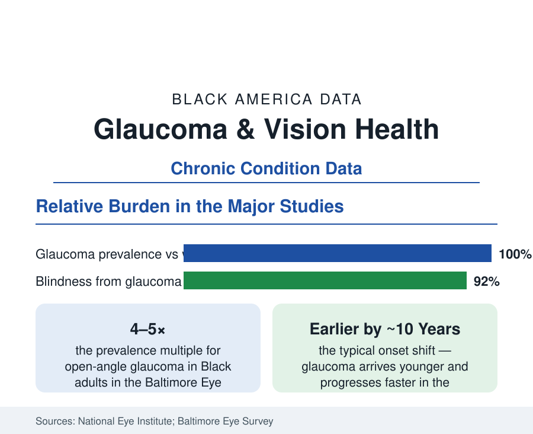

Black Public Health
Glaucoma and Vision Health in Black Adults: The Silent Sight Thief's Unequal Toll
Glaucoma strikes Black adults earlier and blinds at several times the rate — while routine eye-exam rates lag. The vision-health data file.

Glaucoma damages the optic nerve without symptoms until vision is already gone — and in Black adults it arrives about a decade earlier, progresses faster, and blinds at several times the rate of white adults in the population studies that define the field. It is the leading cause of irreversible blindness in Black America, and its disparity is among the best documented — and most preventable — in the entire chronic-disease file, because the condition is detectable years before symptoms with a comprehensive eye exam the utilization data show Black adults getting too late. This article reports the vision file.
Prevalence and Progression: The Baltimore Numbers and Their Successors
The Baltimore Eye Survey of the late 1980s set the field's baseline: open-angle glaucoma prevalence in Black adults at four to five times the white rate, with blindness from the disease at multiples higher still — findings the Salisbury and Barbados studies (the latter a Black-majority population whose glaucoma rates rank among the world's highest, making it the condition's natural laboratory) confirmed and extended. The National Eye Institute's current summaries carry the pattern forward: Black adults over 40 show glaucoma prevalence around three to four times white adults', onset shifted younger, and — the longitudinal treatment studies add — faster visual-field loss under equivalent treatment in several cohorts, with more aggressive disease at presentation because presentation itself comes later. The family-history variable is unusually strong (first-degree relatives carry multiples of the risk), which makes the condition a case where a single diagnosed patient identifies a whole screening family — if the system tells them.
The Rest of the Vision File: Cataract, Retinopathy, and Exams
Glaucoma leads a vision file whose other entries compound it. Cataract — surgically curable — blinds and impairs at higher rates in Black adults in the prevalence studies, with surgical rates and timing (operating later, at denser stages) in the Medicare analyses showing the access pattern. Diabetic retinopathy rides the diabetes file: the eye complication whose screening (the annual dilated exam or retinal photograph) the HEDIS data show completed at lower rates for Black patients, its laser and injection treatments arriving correspondingly later. Refractive error and children's vision (the school-screening and follow-up data) open the file a generation earlier. Across all of it runs the utilization thread: the NHIS and MEPS data on eye-exam recency — adults with diabetes, family history, and age all indicating annual exams, against actual exam rates that stratify by insurance (vision coverage is a separate, often-absent benefit), income, and the workforce supply of the next paragraph. The treatable-blindness paradox — most vision loss in the file is preventable or curable with timely care — is the data's summary judgment.
The Workforce and the Screening Frontier
The provider data frame the access: ophthalmologists and optometrists per capita run thin in the majority-Black geographies of the workforce maps, and Black practitioners are a small single-digit share of both professions in the association counts — against a patient population whose exam compliance the concordance and trust literature suggests responds to exactly that supply. The screening-technology file is the frontier: retinal photography with AI-assisted grading (FDA-cleared autonomous systems for diabetic retinopathy now deployed in primary-care offices), tele-ophthalmology vans and pharmacy-based pressure checks in the demonstration programs, and the community-screening model's measured yields (the glaucoma screenings at churches and barbershops of the health-outreach literature — high detection, with the follow-through-to-treatment rate the eternal weak joint). The insurance-design variable sits under everything: Medicare covers glaucoma screening only for defined high-risk groups (a category that explicitly includes Black adults over 50 and family history — the statute naming the disparity), while routine refraction and glasses sit outside the benefit, in the supplemental market whose penetration stratifies by income.
Reading the Vision Data
A disease four times as common, a decade earlier, blinding at multiples — and detectable with a dilated exam and pressure check years before it takes sight. Glaucoma's file is the prevention argument in its purest form: the biology is unequal, but the blindness is substantially optional, priced in exams not gotten and drops not started. The data know exactly where the sight is being lost. The exam chair is where it gets saved.
More in Black Public Health
Hypertension Among Black Adults: Prevalence, Control, and Consequences
About 55 percent of Black adults have hypertension — the highest rate of any U.S. group. Prevalence, onset, control, and the stroke, heart, and kidney consequences in the data.
Diabetes Among Black Adults: Prevalence and Complications
Nearly one in five Black adults has diabetes, diagnosed or undiagnosed — and its complications fall with particular weight. The CDC data on prevalence, control, and outcomes.
Black Life Expectancy: The Gap at Birth and Its Causes
Black life expectancy at birth is about 73 years, roughly five years below the national figure — the summary measure of every health gap in this section. The CDC data.
Source: National Eye Institute; Centers for Disease Control and Prevention Vision Health Initiative; Baltimore Eye Survey; National Health Interview Survey.